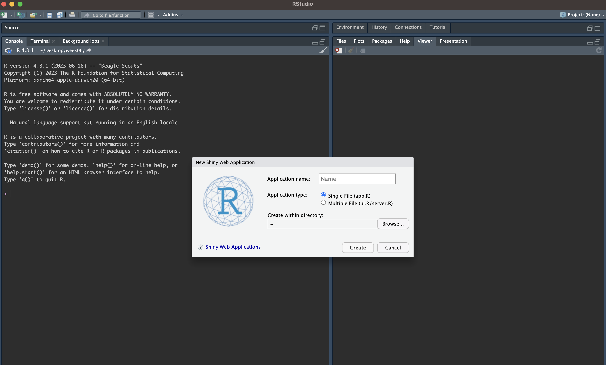
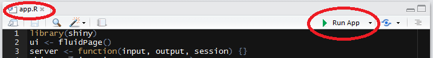
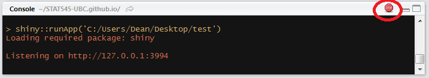
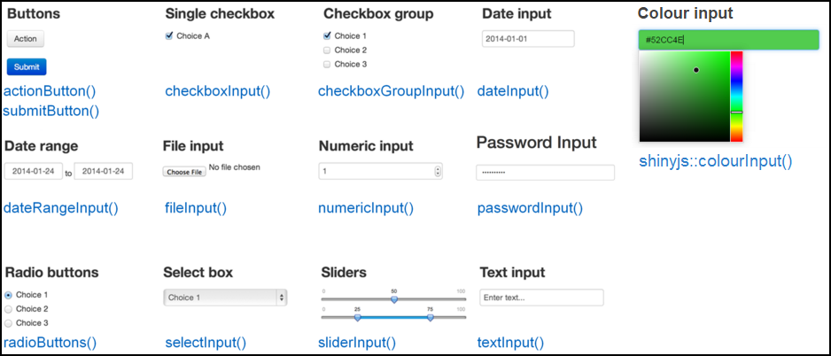

🗓️ Week 06
From Reproducibility to Interactivity
Developing Shiny Apps
Intro to Shiny
Shiny is a “framework for creating web applications using R code”
You can create a dashboard or an interactive map without knowing anything about HTML, CSS, or JavaScript
You’ll learn the two key components of every Shiny app: the UI (user interface) which defines how your app looks, and the server function which defines how your app works
Shiny uses reactive programming to automatically update outputs when inputs change so we’ll finish off the chapter by learning the third important component of Shiny apps: reactive expressions
Setup
You first need to install
install.packages("shiny")Then load in your current R session
library(shiny)
Creating app directory and app.R file
Create a new directory for your app, and put a single file called
app.Rin itThis
app.Rfile will be used to tell Shiny both how your app should look, and how it should behaveIf you’re creating a complex app, you can achieve the same goal with two files:
ui.Randserver.R.
app.R file
library(shiny)
ui <- fluidPage(
"This is my first Shiny app!"
)
server <- function(input, output, session) {
}
shinyApp(ui, server)Shiny basics
Create a new directory and an
app.Rfile containing a basic app in one step by clicking File | New Project, then selecting New Directory and Shiny Web ApplicationIt is very important that the name of the file is
app.Rand out in its own folder, otherwise it would not be recognised as a Shiny app

Deployment
There are a few ways you can run this app:
Click the
Run Appbutton in the document toolbarUse a keyboard shortcut: Cmd/Ctrl + Shift + Enter
Deploy to the shinyapps.io cloud
install.packages("rsconnect")
library(rsconnect)
rsconnect::setAccountInfo(name = "<Account name>",
token = "<Token>",
secret = "<Secret>")
rsconnect::deployApp(appNames = "<App name>")
Cancelling the app
- Click the stop button to stop the app, or press the Escape key.

Building a Shiny App Step by Step
Setup and loading the dataset
- Let’s use the processed EMDAT dataset in which we keep country, year, deaths, injuries, and homelessness variables to build an interactive data visualisation (e.g. plotting trends)
#package uploading
if (!require(shiny)) install.packages("shiny")
if (!require(ggplot2)) install.packages("ggplot2")
if (!require(dplyr)) install.packages("dplyr")
library(shiny)
library(ggplot2)
library(dplyr)
# Read data from CSV
data <- read.csv("emdat_app.csv")Add plain text to the UI
- You can place R strings inside
fluidPage()to render text
fluidPage("Disaster Statistics", "Trends")Replace the line in your app that assigns an empty
fluidPage()into ui with the one above, and run the appThe entire UI will be built by passing comma-separated arguments into the
fluidPage()function. By passing regular text, the webpage will just render boring unformatted text
Add formatted text and other HTML elements
If you want your text to be formatted nicer, Shiny has many functions that are wrappers around HTML tags that format text
h1() function for a top-level header
h2() for a secondary header
strong() to make text bold
em() to make text italicised
and many others
fluidPage(
h1("Disasters"),
"Statistics",
"Trends",
br(),
"Emdat",
strong("data")
) Adding a title
You could add a title to the app with either
h1()or Shiny also has a special functiontitlePanel()Using
titlePanel()adds a visible big title-like text to the top of the page
fluidPage(
titlePanel("Disaster Statistics Trends")
)Adding a layout
sidebarLayout()to add a simple structure. It provides a simple two-column layout with a smaller sidebar and a larger main panelYou can add the following code after the
titlePanel()
sidebarLayout(
sidebarPanel("our inputs will go here"),
mainPanel("the results will go here")
)- Remember that all the arguments inside
fluidPage()need to be separated by commas
Adding inputs to the UI
Inputs are what gives users a way to interact with a Shiny app. Shiny provides many input functions to support many kinds of interactions that the user could have with an app
textInput()is used to let the user enter text,numericInput()lets the user select a number,dateInput()is for selecting a date, andselectInput()is for creating a select box (i.e. dropdown menu)All input functions have the same first two arguments:
inputIdandlabel. TheinputIdwill be the name that Shiny will use to refer to this input when you want to retrieve its current valueThe
labelargument specifies the text in the display label that goes along with the input widget
Shiny inputs

Input for country
The first input we can have is to select a country in this data
The most appropriate input type in this case is probably the select box. Look at the documentation for
selectInput()and create an input function
selectInput(
inputId = "country",
label = "Select country",
choices = unique(data$country),
selected = "Belgium"
)Input for variables to analyse
- Like the country variable, for this one we should also have a dropdown menu to choose the variables
selectInput(
inputId = "variable",
label = "Select variable",
choices = c("Deaths", "Injuries", "Homelessness"),
selected = "Deaths"
)- Add these input codes inside
sidebarPanel(), after the previous input (separate them with a comma)
Input for years to show trends over certain period of time
The most sensible type of input for this is
sliderInput()Looking at the documentation for
sliderInput(), you’ll see that by supplying a vector of length two as the value argument, it can be used to specify a range rather than a single number
sliderInput(
inputId = "year_range",
label = "Select year range",
min = min(data$Year),
max = max(data$Year),
value = c(min(data$Year), max(data$Year)),
step = 1,
sep = ""
)Add placeholders for outputs
After creating all the inputs, we should add elements to the UI to display the outputs. Outputs can be any object that R creates and that we want to display in our app - such as a plot, a table, or text
Shiny provides several output functions, one for each type of output. Similarly to the input functions, all the output functions have a
outputIdargument that is used to identify each output, and this argument must be unique for each output
Output for a plot
Since we want a plot to show trends of disaster statistics, the function we can use is
plotOutput()You can add the following code into the
mainPanel()
mainPanel(
plotOutput("plot")
)Output for a table
Since we want a plot to show trends of disaster statistics, the function we can use is
tableOutput()You can add the following code into the
mainPanel()
mainPanel(
tableOutput("results")
)Implement server logic to create outputs
If you look at the server function, you’ll notice that it is always defined with two arguments: input and output
You must define these two arguments! Both input and output are list-like objects. As the names suggest, input is a list you will read values from and output is a list you will write values to
inputwill contain the values of all the different inputs at any given time, andoutputis where you will save output objects (such as tables and plots) to display in your app
Building an output
Save the
outputobject into the output list (remember the app template - every server function has an output argument)Build the object with a
render* function, where * is the type of outputAccess
inputvalues using the input list (every server function has an input argument)
Making an output react to an input and building the plot output
Let’s learn how to make an output depended on an input
The variable
inputcontains a list of all the inputs that are defined in the UIinput$year_rangereturn a vector of length two containing the minimum and maximum year. Whenever the user manipulates the slider in the app, these values are updated, and whatever code relies on it gets re-evaluated. This is a concept known as reactivity
server <- function(input, output, session) {
output$plot <- renderPlot({
variable <- switch(input$variable,
"Deaths" = "deaths",
"Injuries" = "injuries",
"Homelessness" = "homelessness")
data %>%
filter(country == input$country,
Year >= input$year_range[1],
Year <= input$year_range[2]) %>%
ggplot(aes(Year, .data[[variable]])) +
geom_line() +
labs(y = input$variable)
})
}Making an output react to an input and building the plot output
- Recall that we have 3 inputs: country, variable, and year. We can filter the data based on the values of these three inputs. We can use dplyr functions to filter the data
server <- function(input, output, session) {
output$plot <- renderPlot({ variable <- switch(input$variable, "Deaths"
= "deaths", "Injuries" = "injuries", "Homelessness" = "homelessness")
data %>%
filter(country == input$country,
Year >= input$year_range[1],
Year <= input$year_range[2]) %>%
ggplot(aes(Year, .data[[variable]])) +
geom_line() +
labs(y = input$variable)
})
}Finalising your Shiny app
if (!require(shiny)) install.packages("shiny")
if (!require(ggplot2)) install.packages("ggplot2")
if (!require(dplyr)) install.packages("dplyr")
library(shiny)
library(ggplot2)
library(dplyr)
# Read data from CSV
data <- read.csv("emdat_app.csv")
ui <- fluidPage(
# Header
h1("Disaster statistics trends"),
# Sidebar layout
sidebarLayout(
# Sidebar panel
sidebarPanel(
selectInput(
inputId = "country",
label = "Select country",
choices = unique(data$country),
selected = "Belgium"
),
selectInput(
inputId = "variable",
label = "Select variable",
choices = c("Deaths", "Injuries", "Homelessness"),
selected = "Deaths"
),
sliderInput(
inputId = "year_range",
label = "Select year range",
min = min(data$Year),
max = max(data$Year),
value = c(min(data$Year), max(data$Year)),
step = 1,
sep = ""
)
),
# Main panel
mainPanel(
plotOutput("plot")
)
)
)
server <- function(input, output, session) {
output$plot <- renderPlot({
variable <- switch(input$variable,
"Deaths" = "deaths",
"Injuries" = "injuries",
"Homelessness" = "homelessness")
data %>%
filter(country == input$country,
Year >= input$year_range[1],
Year <= input$year_range[2]) %>%
ggplot(aes(Year, .data[[variable]])) +
geom_line() +
labs(y = input$variable)
})
}
shinyApp(ui, server)Further materials
Further texts:
Tutorials:
Lab exercise: Building a Disaster Statistics Shiny App
Problem 1: Setup
Initialise a Shiny app and load required libraries
Read “emdat_app.csv” into data
Problem 2: UI Design
- Add a title, country selector, variable selector, and year range slider.
Problem 3: Initial Plot
Display a placeholder plot
Filter data based on user inputs and create a line plot
Problem 4: Plot Customisation
Label axes dynamically based on the selected variable
Implement UI option for different plot types
Problem 5: Dynamic Updates
Use reactive expressions to update variable choices based on the selected country
Make the plot dynamically update with user inputs
Problem 6: Testing and Debugging
- Test the app with various inputs